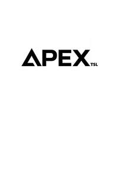

Trade Mark Journal No.2026/012 20 March 2026
UK00004347763 2 March 2026 (3,7,9,11,16,21,24,25,28)

- Class 3
- Household cleansers; Household fragrances; Cleaning substances for household use; Car shampoos; Car polish; Perfumes; Fragrances; Oils for perfumes and scents; Liquid perfumes; Colognes; Fragrances for automobiles; Body fragrances; Aftershave lotions; Aftershaves; Cologne; Room perfume sprays; Window cleaners in spray form.
- Class 7
- Electric cleaners for household purposes; Household vacuum cleaners; Robot cleaners for household purposes; Housekeeping robots for household purpose; Steam cleaners for household purposes; Vacuum cleaners for household purposes; Electric food blenders [for household purposes]; Robotic cleaners for household purposes; Electric blenders for household purposes; Blenders, electric, for household purposes; Electric steam cleaners for household purposes; Whisks, electric, for household purposes; Electric whisks for household purposes; Kitchen knives (Electric -); Kitchen tools [electric utensils]; Electrical appliances used in kitchen for grinding; Spray guns for paint; Guns for paint spraying; Air brushes [paint spraying]; Shredders [power lawn and garden tools]; Gardening tools (Electric -); String trimmers [power lawn and garden tools]; Electric kitchen tools; Line trimmers for garden use; Edging tools [machines]; Power tools.
- Class 9
- Mobile phone chargers; Mobile phone straps; Mobile phone battery chargers; Cell phone battery chargers for use in vehicles; Mobile phone connectors for vehicles; Hands-free kits for cell phones; Mobile phone covers; Mobile phone speakers; Phone plugs; Mobile phone cases; Hands-free headsets for cell phones; Mobile phone screen protectors; Wireless headsets for mobile phones; Mobile phone ring stands; Holders for cell phones; Hands-free kits for telephones; Dashboard mounts for mobile phones; Phone extension jacks; Internet phones; Chargers for smartphones; Electrical adapters; Electrical cables; Electrical cords; Electrical plugs; Electrical fuses; Electrical sockets; Electrical switches; Electric wiring; Car charger; Kitchen scales; Temperature monitors [valves] for central heating radiators; Radios; Radio sets; Radio receiving tuners; Transistors [electronic]; Flash memory; Flash memory card; Flash memory cards; USB flash drives; Memory sticks; Memory devices; Memory storage devices.
- Class 11
- Dehumidifiers for household use; Humidifiers for household use; Electric kettles [for household purposes]; Electrical lamps; Electrical lighting fixtures; Electrical luminaires; Electrical lamps for outdoor lighting; Electrical storage heaters; Electrical fans being parts of household airconditioning installations; Indoor electrical lighting fixtures; Cooling fans; Ceiling fans; Ventilating fans; Extractor fans; Room fans; Table fans; Electric bladeless fans; Air conditioning fans; Fan heaters; Electric heating fans; USB-powered desktop fans; Fans for hair drying; Motorised fans for air conditioning; Electric heaters; Halogen heaters; Air heaters; Radiant heaters; Bathroom heaters; Room heaters; Dish heaters; Radiant fan heaters; Portable electric heaters; Gas fired heaters; Oil fired heaters; Air humidifiers [water containers for central heating radiators]; Garden lighting.
- Class 16
- Stationery; Envelopes [stationery]; Paper stationery; Printed stationery; Stickers [stationery]; Office stationery; Stencils [stationery]; Wrappers [stationery]; Binders [stationery]; Stationery boxes; Folders [stationery]; Stationery folders; Office paper stationery; Writing stationery; Scented stationery; Adhesives for stationery; Paper folders [stationery]; Pads [stationery]; Thumbtacks [stationery]; Transparencies [stationery]; Party stationery; Pencil ornaments [stationery]; Pencil ornaments (stationery); Files [stationery]; Marking pens [stationery]; Paper sheets [stationery]; Document holders [stationery]; Glitter for stationery purposes; Adhesives for stationery purposes; Glue pens for stationery purposes; Desktop cabinets for stationery [office requisites]; Adhesive pads [stationery]; Tapes (adhesive -) [stationery]; Notepads; Glue for stationery or household use; Gums [adhesives] for stationery or household purposes; Paper envelopes for packaging; Wood pulp board [stationery]; Automatic paper clip dispensing machines for office or stationery use; Printed paper invitations.
- Class 21
- Household utensils; Household containers; Household or kitchen containers; Household or kitchen utensils; Dishes [household utensils]; Utensils for household purposes; Graters for household purposes; Colanders for household purposes; Brushes for household purposes; Baskets for household purposes; Containers for household use; Containers for household or kitchen use; Jars for household use; Laundry bins for household purposes; Non-electric food blenders [for household purposes]; Brushes for household use; All-purpose portable household containers; Kitchen utensils; Kitchen jars; Kitchen containers; Kitchen paper dispensers; Kitchen boards for chopping; Cooking utensils; Chopping boards for kitchen use; Plastic spray nozzles; Garden hose spray nozzles; Spray nozzles for garden hoses; Sprayer wands for garden hoses; Sprayers for attachment to garden hoses.
- Class 24
- Kitchen towels; Kitchen linen; Kitchen and table linens; Kitchen towels [textile]; Kitchen towels of cloth.
- Class 25
- Clothing; Knitwear [clothing]; Jackets [clothing]; Ready-to-wear clothing; Woolen clothing; Garments for protecting clothing; Jerseys [clothing]; Denims [clothing]; Shorts [clothing]; Cashmere clothing; Silk clothing; Knitted clothing; Hoods [clothing]; Windproof clothing; Belts [clothing]; Belts for clothing; Rainproof clothing; Infant clothing; Leisure clothing; Clothing for sports; Clothing for children; none of the aforesaid in relation to golf.
- Class 28
- Toy model kit cars; Wheels for toy vehicles; Toy cars; none of the aforesaid in relation to golf.
Apex Trading Supplies Ltd